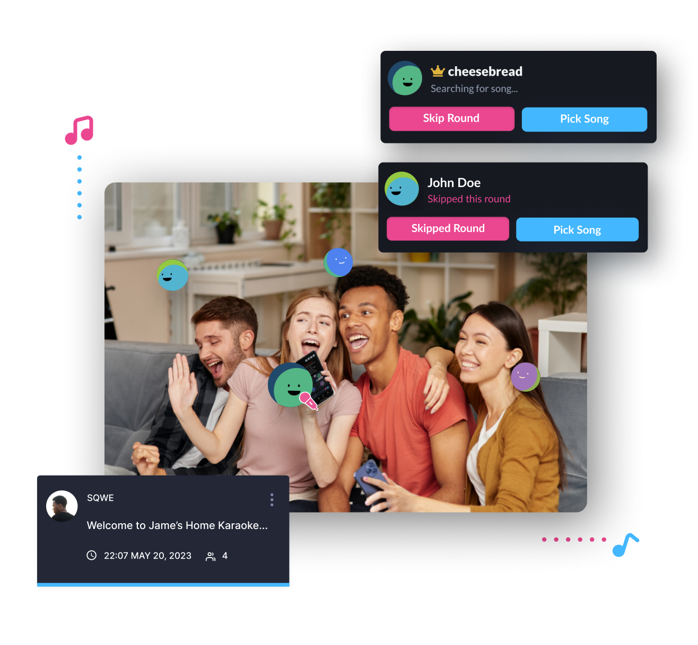

HOW IT WORKS
Virtually
The pandemic forced most all events into a virtual experience, and Karaoke was no exception. Bada Sing allows you to join existing online sessions or host your own with ease.
Existing online Session
If you know the room code, you can join with a single click, no
account or any registration required.
If you take just a second to create an account, you can view a
listing of all current singing sessions available to join.
Joining is just a click away, and you will be able to
participate in that singing session with others.
Host your own
Be your own host. Create new virtual rooms and share a simple
link to invite others to join
Anyone with your room link can easily join, even without an
account on Bada Sing
If you decided to make your room public, your room will be
available for other Bada Sing members to join
Once in a room, you can search the 40,000+ song library, add
your song choice to the rotation, keep a favorites list, and
when it is your turn, sing your heart out!
In Real Life
You can also use Bada Sing for your in-person, in real life (IRL) events.
Simply create a new room from your mobile device.
Use a central screen/monitor to display the player. The player,
also called the KTV, is what will play the audio and display the
lyrics.
Invite others to join from their mobile devices.
Everyone uses their own mobile device to search for and select
songs to sing, and be added to the queue to sing their song when
it is their turn.
